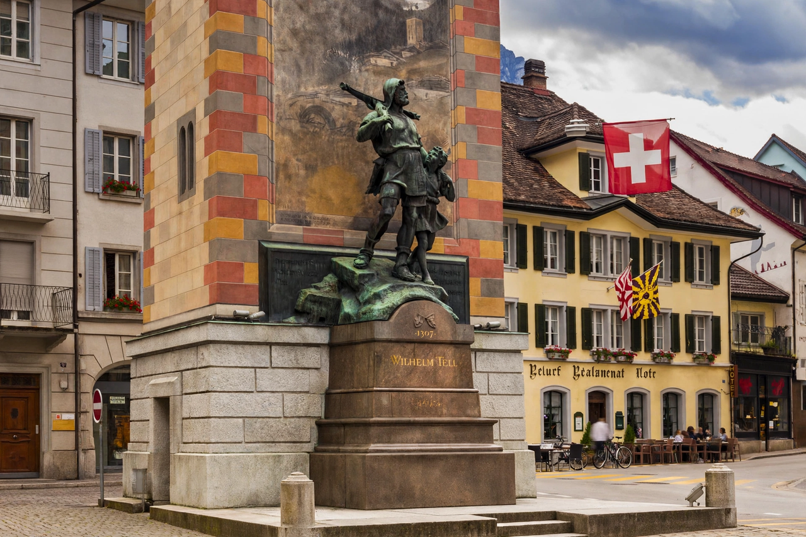

William Tell (German: Wilhelm Tell) is a legendary folk hero of Switzerland. According to the legend, Tell was an expert marksman with the crossbow who, in the early fourteenth century, assassinated Albrecht Gessler, the tyrannical Habsburg bailiff (Landvogt) of Altdorf in the canton of Uri — an act said to have sparked the rebellion that founded the Old Swiss Confederacy. The story, first recorded in the fifteenth century, became central to Swiss national identity and was immortalised in Friedrich Schiller's play William Tell (1804) and Rossini's opera Guillaume Tell (1829).
| Known for | Shooting an apple off his son's head; killing the bailiff Gessler |
|---|---|
| Home | Bürglen, canton of Uri, Switzerland |
| Legend dates | Early 14th century; apple-shot traditionally dated 18 November 1307 |
| Family | Son Walter; wife Hedwig |
| First recorded | White Book of Sarnen (c. 1470); Tellenlied (c. 1477) |

Gessler, the Habsburg Vogt of Altdorf, raised a pole in the town square topped with his hat, ordering all passers-by to bow to it. Tell, a respected hunter and crossbowman from Bürglen, refused. Arrested, he was offered his freedom if he could shoot an apple placed on the head of his young son Walter. Tell succeeded, splitting the apple with one bolt — but he had taken two bolts, and when Gessler demanded to know why, Tell answered that the second was reserved for Gessler himself had the first harmed the boy. Enraged, Gessler ordered Tell bound and taken across Lake Lucerne to the castle of Küssnacht. A storm freed Tell, who leapt ashore at the place now marked by the Tellskapelle (Tell's Chapel); he then ambushed and killed Gessler in the Hohle Gasse ("hollow way") near Küssnacht.
Tradition links Tell's deed with the Rütli oath of the three forest cantons — Uri, Schwyz and Unterwalden — the founding pact of the Swiss Confederacy, dated to 1291 or 1307 in various versions.
No contemporary evidence for Tell exists; the story appears in writing only in the fifteenth century, in the White Book of Sarnen (c. 1470) and the Tellenlied. The apple-shot motif is far older and widespread, appearing in Saxo Grammaticus's tale of Palnatoki and in Norse and English ballads. Historians treat Tell as a legend, though the Habsburg bailiffs and the Swiss wars of independence of the period are historical.
Schiller's Wilhelm Tell (1804), written late in the dramatist's life, fixed the story's image across Europe; Rossini's opera supplied its famous overture. Tell remains Switzerland's national hero, pictured on monuments at Altdorf and Küssnacht and invoked whenever Swiss independence and marksmanship are celebrated.